アメリカ南部生まれの常緑樹、タイサンボク（泰山木）。初夏に大人の顔ほどもある白い花を咲かせ、厚くてつやのある葉を、一年じゅう少しずつ落とします。私はこの落ち葉に惚れて、上京するたびに東京の公園で拾い集めています。拾い始めて5年あまり。ふるさとのアメリカ南部の海岸平野、南部の象徴としての顔、明治12年に上野で植えられた記念樹と、それを50年見守った渋沢栄一、東京に植えられた88か所の地図、そして落ち葉から生まれた「葉っぱの金継ぎ」まで。一本の木を、いろいろな角度からたどります。長文です。
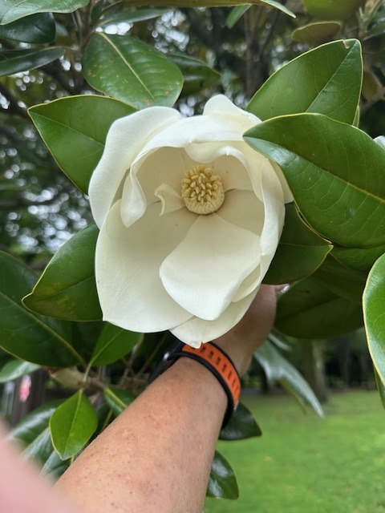
先に、答え
- 日本で最初に植えられたのは、新宿御苑？ 上野？
植えた日付まではっきりしている、いちばん古い木は上野恩賜公園の1本です。明治12年（1879年）8月25日、アメリカの前大統領グラント将軍の夫人ジュリアが植えました。新宿御苑も「最初の場所」といわれますが、いまある古い木は明治20〜30年代の植栽とされ、決着はついていません。 - 渋沢栄一は、どう関わったの？
上野の歓迎会を仕切った中心人物のひとりです。50年後には植樹記念碑を建て、90歳で除幕式に臨んで、当時を語りました。 - タイサンボクは「常緑のホオノキ」？
見た目はそっくりな親戚ですが、家系図では別の枝です。ホオノキにより近いのは、アメリカの葉を落とすモクレンのほうでした。 - 東京には、どれくらいあるの？
私たちホホホの森探検隊の地図には、88か所が載っています。台地の上の公園に多く、とくに杉並区の小さな公園にずらりと並びます。
ことばのメモ
- 常緑樹
- 一年じゅう葉をつけている木。それでも古い葉は、少しずつ落とします
- 集合果（しゅうごうか）
- 小さな実がたくさん集まって、一つの実のように見えるもの。タイサンボクの実は松ぼっくりのような形です
- 節（せつ）
- 植物の分類で、「属」をさらに小分けにしたグループ
- 海岸平野
- 海や川が運んだ砂や泥が積み重なってできた、海ぞいのなだらかな平野
- 玉蘭（ぎょくらん）
- もとはハクモクレンの中国名。明治のころは、タイサンボクもこう呼ばれました
- 台地と低地
- 東京の西側に広がる一段高い平らな土地が台地（武蔵野台地など）、東側や川沿いの低い土地が低地です
閉館まぎわの原美術館で
タイサンボクを、はじめて「タイサンボク」として意識したのは、品川・御殿山の原美術館でした。昭和13年（1938年）に建てられた実業家・原邦造の邸宅を使った、現代美術の美術館です。設計は渡辺仁。上野の東京国立博物館の本館を手がけた建築家です。（この縁は、あとで効いてきます。）
写真の日付を見ると、2020年12月27日。建物の老朽化などを理由に、2021年1月11日に閉館する、その2週間前でした。いまは群馬県渋川市の「原美術館ARC」が活動を引き継いでいます。
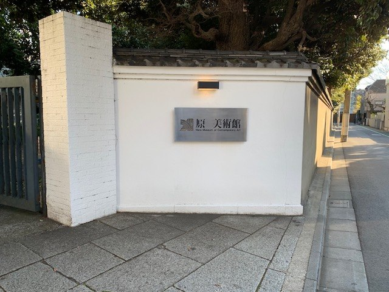
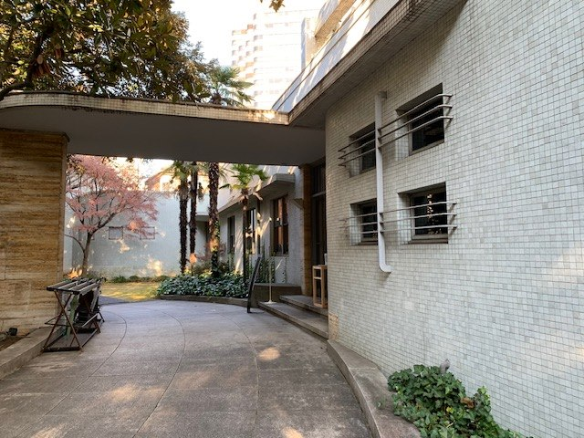
玄関へ向かう小道の脇に、その木はありました。真冬だというのに、枝の葉は表がつやつやの緑で、裏は茶色の細かい毛でびっしり。足もとの落ち葉は、それがこんがり焼けたような色に変わっていました。表と裏で、まるで別の葉っぱです。ひと目で惚れてしまいました。
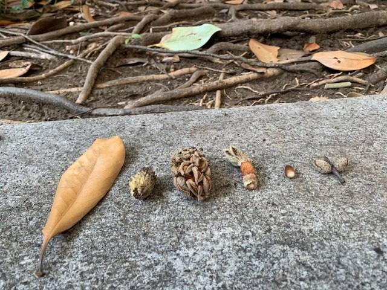
ふるさとは、アメリカ南部の海岸平野
学名は Magnolia grandiflora（マグノリア・グランディフローラ）、「大きな花のマグノリア」という意味です。英語では southern magnolia、「南部のマグノリア」と呼ばれます。
ふるさとは、アメリカ合衆国の南東部。ノースカロライナ州の東部（バージニア州からとする資料もあります）からフロリダ州の中部まで、西はテキサス州の東部まで。大西洋とメキシコ湾に沿う「海岸平野」に、帯のように分布しています。
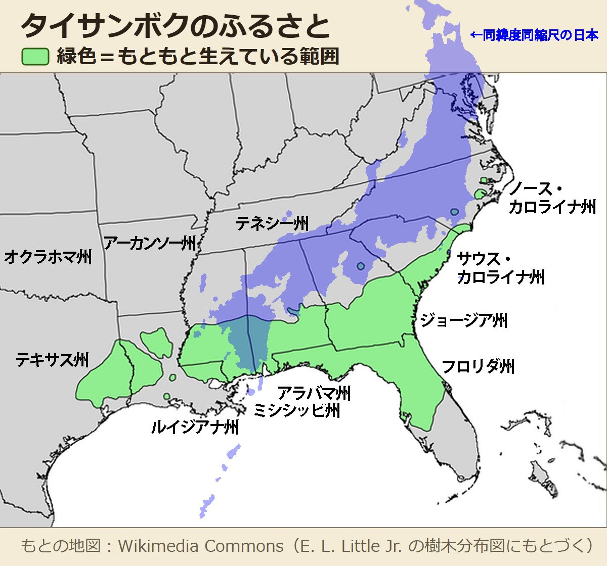
同じ緯度・同じ縮尺で日本列島を重ねてみると、ふるさとの帯は、日本でいえば九州から西日本のあたりにあたります。東京はその北のはずれ。北緯40度近い盛岡は、帯からずっと北に外れてしまいます。
そのなかでタイサンボクが生えるのは、水辺や湿地のへり、湿り気のある低地の林、海辺の林です。ただし、水につかりっぱなしになるのは苦手。夏の山火事にも弱く、くり返し火が入る土地には生えません。分布の北の端は、冬の最低気温とよく対応していることが知られています。
原産地では大木になります。英語版のウィキペディアによれば、全米一の木はミシシッピ州スミス郡にあって、高さ37m。花は直径30cmになることもあり、レモンのような甘い香りがします。
アメリカでは、ふるさとの外にも植えられています。北はニュージャージー州やニューヨークのロングアイランド、西海岸ではカナダのバンクーバーあたりまで。寒さに強い品種なら、内陸のケンタッキー州ルイビルやオハイオ州シンシナティでも育つそうです。ロングアイランドは、緯度でいえば盛岡より少し北です。盛岡でも、寒さに強い品種を選べば…と、つい考えてしまいます。
「ブル・ベイ」と呼ばれて
英語の呼び名は、southern magnolia だけではありません。laurel magnolia、evergreen magnolia、そして bull bay。ベイ（bay）は、葉がクスノキ科のレッドベイに似ているから。ブル（bull）のほうは、木が大きいからという説と、牛がこの葉を食べたという話があるからという説の、二つがあるそうです。牛も、この厚い葉をかじったのでしょうか。
ヨーロッパへ渡ったのは、日本よりずっと早く、18世紀の前半です。北アメリカでこの木をはじめて採集した博物学者マーク・ケイツビーが、1726年にイギリスへ持ち込みました。フランスへは、フランス人がルイジアナのミシシッピ川のほとりで集めたものが伝わっています。
イギリスでは、たちまち人気者になりました。デヴォン州エクセターのジョン・コリトンは、木のまわりに足場と桶を組み、枝を土に伏せて根を出させる「取り木」でふやしました。その苗は、はじめ1本5ギニーで売れたといいます。のちに半ギニーまで値下がりしたそうです。1759年には、スウェーデンの博物学者リンネが学名をつけました。属名の Magnolia は、フランスの植物学者ピエール・マニョルにちなんだものです。
南部の象徴、マグノリア
アメリカ南部で「マグノリア」といえば、まずこの木のことです。
ミシシッピ州は、州の木も州の花もマグノリアで、「マグノリア・ステート」の愛称で呼ばれます。1900年、ミシシッピ州の子どもたちが州の花を投票で選んだとき、マグノリアは1万2745票。2位の綿の花（4171票）に、3倍以上の差をつけました。綿花の州で、綿に勝ったわけです。お隣のルイジアナ州の花も、マグノリアです。
ホワイトハウスにも、有名な1本がありました。第7代大統領アンドリュー・ジャクソンが、テネシー州の自分の農園から苗を運び、亡くなった妻をしのんで植えたと伝わる「ジャクソン・マグノリア」です。1928年から1998年まで、20ドル札の裏のホワイトハウスの絵にも描かれていました。歴代の大統領は、この木の挿し木や苗を人に贈ってきたそうです。1940年代から幹が傷みはじめ、金属の支柱とワイヤーで支えられてきましたが、2017年に大部分を伐ることが決まり、2025年には残る幹も撤去されて、子孫の若木に代替わりしたそうです。
ゴルフのマスターズ・トーナメントの舞台、ジョージア州のオーガスタ・ナショナル・ゴルフクラブには、クラブハウスへ続く並木道「マグノリア・レーン」があります。61本のタイサンボクは、ここがまだ種苗園だった1858〜59年に、種から育てて植えられたものです。南北戦争よりも前のことです。
映画『マグノリアの花たち』（原題は Steel Magnolias、1989年）は、ルイジアナの小さな町の女性たちの物語です。「鋼鉄のマグノリア」とは、花のようにやさしく、鋼のように強い南部の女性のこと。クリスマスには、タイサンボクの葉でリースや飾りを作ります。つやのある緑の表と、茶色い裏。その取り合わせが飾りにぴったりで、水がなくても長持ちするのだそうです。（この話は、最後にもう一度出てきます。）
木材としての顔もあります。アメリカ南東部では、タイサンボクと近い仲間の材が、まとめて「マグノリア」の名で売られ、家具や箱、ブラインド、ドア、ベニヤ板に使われてきました。
ただし、南部の象徴であることは、光ばかりではありません。ビリー・ホリデイが1939年に歌った『奇妙な果実』は、南部で黒人がリンチで殺されたことを告発する歌です。そこでは甘いマグノリアの香りが、むごたらしい光景と並べて歌われています。美しい南部の象徴だからこそ、痛烈な皮肉になったのでしょう。そのミシシッピ州の旗には、2020年まで南軍旗の図柄が入っていました。住民投票をへて新しい旗になったのは、2021年1月11日。奇しくも、原美術館が閉館したのと同じ日です。新しい旗のまんなかには、白いマグノリアの花が描かれています。州の法律では、この花は「もてなしの心、希望、そして再生」を表すとされています。
恐竜の時代からの家系と、ホオノキ
地質学古生物学科を出た身としては、ここは素通りできません。
タイサンボクの属するモクレン科は、花を咲かせる植物のなかでも古い家系です。モクレン科の化石は、恐竜がいた白亜紀、およそ9500万年前の地層から見つかっています。モクレンの仲間の花は、甲虫に花粉を運んでもらう、古いタイプの花とされます。
いまのモクレンの仲間は、東アジアと、南北アメリカに分かれて暮らしています。ヨーロッパでは化石が見つかるのに、いま野生のモクレンはいません。かつて北半球に広がっていた暖かい森の住人が、その後の寒冷化や氷河期をへて、離ればなれに生き残ったと考えられています。
さて、気になっていた問題です。タイサンボクは「常緑のホオノキ」と考えていいのでしょうか。岩手の山でおなじみのホオノキと、たしかによく似ています。どちらも枝先に大きな白い花を上向きに咲かせ、強く香ります。実は集合果で、秋に熟して裂けると、赤い種が白い糸でぶら下がります。タイサンボクの苗は、ホオノキを台木にして接ぎ木できるほどです。
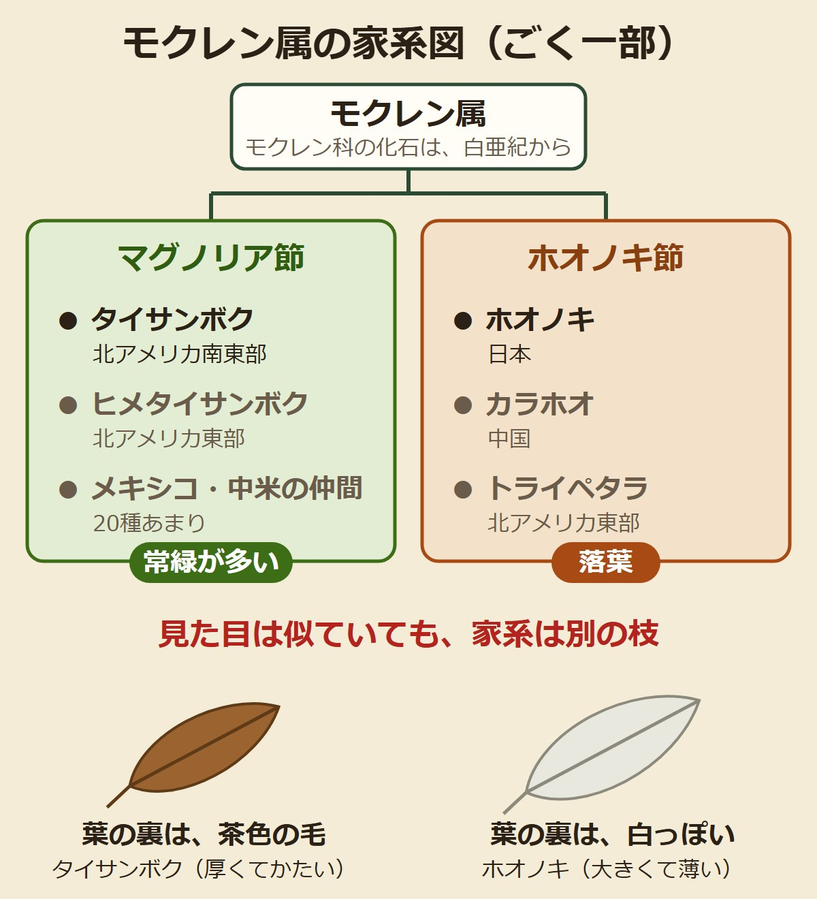
ところが、家系図をたどると話が変わります。タイサンボクは「マグノリア節」。同じ節には、北アメリカ東部のヒメタイサンボク（スイートベイ）や、メキシコや中米に暮らす20種あまりの仲間がいます。ヒメタイサンボクはモクレン属全体の基準になっている種なので、タイサンボクは、いわばモクレン属の「本家」筋です。
いっぽうホオノキは「ホオノキ節」。中国のカラホオ（漢方薬の厚朴（こうぼく）の原料）や、北アメリカ東部の落葉樹トライペタラ（英名アンブレラ・マグノリア）が仲間です。アジアとアメリカの両方に仲間がいる、ただ一つの節だそうです。つまり、ホオノキの「アメリカの親戚」は、タイサンボクではなく、葉を落とすトライペタラのほう。タイサンボクとホオノキは、兄弟というより、いとこくらいの間柄です。
それでも、体の中の化学は親戚らしく似ています。タイサンボクには、菌をおさえるはたらきのある成分マグノロールとホノキオールが含まれています。ホノキオール（honokiol）は、ホオノキの名にちなむとされる成分です。見分けるのは簡単で、落ち葉を裏返せばすぐわかります。タイサンボクの葉の裏は、多くが茶色っぽい毛におおわれ（毛の少ない木もあります）、ホオノキの葉の裏は白っぽい色をしています。
日本へ。名前と、最初の1本
日本へやってきたのは、ヨーロッパから150年ほど遅れた明治のはじめ。明治6年（1873年）に渡来したとされます。
和名の「泰山木」は、花や葉の大きさを中国の名山・泰山になぞらえたものといわれます。ただ、植物学者の牧野富太郎は、大きな花を大きな盃（さかずき）に見立てた「大盞木（たいさんぼく）」がもとだと考えました。こちらの説が有力だそうです。中国では「荷花玉蘭」、ハスの花のような玉蘭（ハクモクレン）と呼ばれます。
では、日本で最初に植えられたのはどこか。候補は新宿御苑と、上野恩賜公園です。
新宿御苑は「日本で初めて植えられた場所」として紹介されることがあります。御苑の前身は、明治5年（1872年）にできた内藤新宿試験場。海外から入ってきた果樹や野菜、草花を試しに育てる場所でした。御苑にはいまタイサンボクが50本ほどあるらしく、大木戸門近くの古い木は、明治20〜30年代に植えられたものとされます。いっぽう上野には、明治12年（1879年）の日付が石に刻まれています。
「植えた日付がはっきりしている、いちばん古い木」は上野の1本です。ただ、渡来したばかりの苗を、まず新宿の試験場で育てていたとしても不思議はありません。グラント夫人が植えた苗が新宿育ちだったら話がつながるのですが…これは私の想像です。「最初の1本」の決着は、ひとまずおあずけにしておきます。
上野、明治12年8月25日
その上野の1本には、ちょっとしたドラマがあります。
ユリシーズ・グラントは、南北戦争で北軍を勝利に導いた将軍で、第18代のアメリカ大統領です。2期8年の任期を終えたあと、家族と世界一周の旅に出て、1879年（明治12年）の夏に日本へやってきました。
8月25日、上野公園で、東京府民の名による盛大な歓迎会が開かれます。明治天皇の臨幸（りんこう）もあおぎました。この歓迎会を仕切った中心人物のひとりが、当時39歳の渋沢栄一です。のちに渋沢自身が、益田孝、福地源一郎（桜痴）と自分たちが首脳の位置に立った、と振り返っています。
会場では、日本の武芸が披露されました。何が披露されたかは、記念碑の碑文には「槍術・剣術・騎射・犬追物」、渋沢の思い出話では「流鏑馬・母衣引・犬追物」とあり、少しずつ違います。50年たつと、記憶も少しずつ形を変えるようです。
そしてこの日、将軍はヒノキ（アメリカ生まれのローソンヒノキ）を、夫人のジュリアは玉蘭を、記念に植えました。碑文には「夫人も亦玉蘭を植ゑられたり」とあります。この玉蘭が、タイサンボクです。
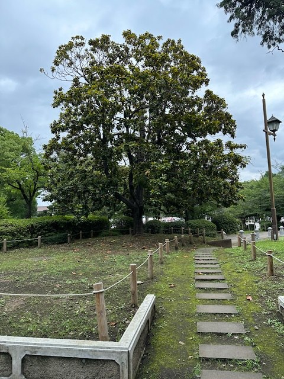
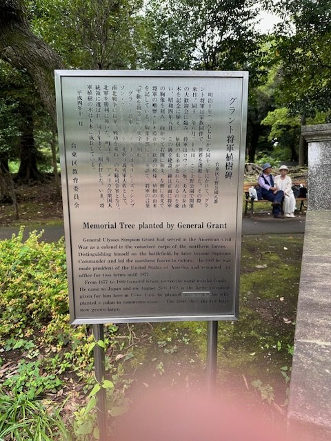
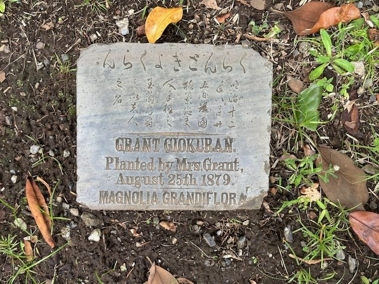
木の根もとの石の銘板には「ぐらんとぎよくらん」。将軍のヒノキのほうには「ぐらんとひのき」の銘板があるそうです。英語では GRANT GIOKURAN、Planted by Mrs Grant, August 25th 1879。そして学名の MAGNOLIA GRANDIFLORA。タイサンボクという名前は、どこにも出てきません。
それから50年。植樹の由来が忘れられないようにと、昭和4年（1929年）8月の日付で、記念碑の碑文がまとめられました。署名は、子爵渋沢栄一と男爵益田孝。50年前に歓迎会を仕切ったふたりが、碑を建てて東京府に寄付したのです。除幕式は昭和5年（1930年）5月30日。90歳の渋沢は式に出て式辞を述べ、そのあと上野精養軒の茶会で、50年前の歓迎会の思い出を語りました。この話は、渋沢の竜門社の雑誌に残っています。渋沢が亡くなる、前の年のことでした。
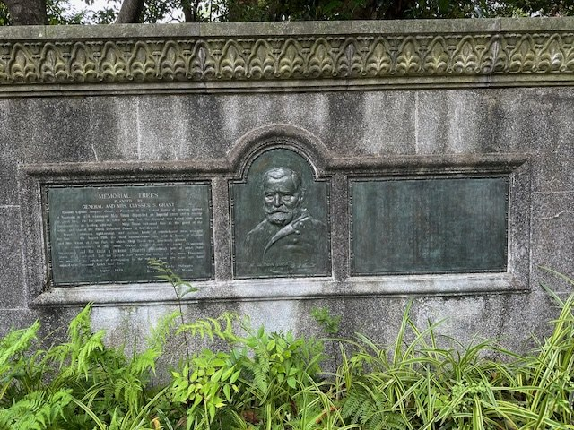
碑のまんなかには将軍の肖像、右に日本語、左に英語の碑文がはめこまれ、英文には将軍の言葉「Let us have peace（平和を我等に）」が刻まれているそうです。南北戦争を戦い抜いた人の言葉だと思うと、重みがあります。
いま、将軍のヒノキはあまり元気がないという報告がある一方、夫人の玉蘭は枝葉を大きく広げています。この上野の木は、葉の細いホソバタイサンボクだとされています。
ちなみに、グラント夫人のタイサンボクから歩いて数分のところに、東京国立博物館の本館があります。設計は、原美術館と同じ渡辺仁。私が惚れた原美術館のタイサンボクは、建築家つながりで上野につながっていたのでした。ちょっと、こじつけですが。
日本での広がりと、人気のほど
タイサンボクは日本の気候によくなじみ、丈夫に育つことから、急速に広まりました。ただ、日本で見かけるものの多くは、ホソバタイサンボクだといわれます。葉の幅が狭く、裏の毛が少なく、寒さにやや強いのが特徴です。細い葉の品種は、1825年にフランスでも作られています。
葉の表をおおうろうのような膜のおかげで、潮風や大気の汚れに強く、アメリカでも都市の植栽に使われています。モクレンの仲間でいちばん乾燥に強いともいわれ、日本では燃えにくい木としても知られます。日本でも、公園や学校、街路など、いろいろな場所に植えられてきました。
品種は、これまでに150以上が名づけられ、いま残っているのは30〜40ほどだそうです。最近よく見かけるのが、1952年にノースカロライナ州の種苗園で生まれた小型の品種「リトルジェム」。高さ4mほどの細い樹形で、植えて早いうちから花を長く咲かせるので、街路樹に向いています。昭和12年（1937年）には、近い親戚のヒメタイサンボクも日本に入ってきました。
人気のほどは、どうでしょう。俳句では「泰山木の花」が夏の季語で、詠まれてきた花ではあります。ただ、花は高い枝先に上向きに咲き、一輪の命は1〜2日。梅雨どきでもあり、下から見上げても気づかれにくい花です。大きな木になるので、小さな庭にも向きません。名前は知らなくても、見たことはある。日本でのタイサンボクは、そんな木なのかもしれません。
そして、寒さにはやや弱く、東北北部では育ちがよくないとされます。盛岡で立派なタイサンボクに出会うことは、めったにありません。私が上京のたびに落ち葉を拾うのは、そのためでもあります。
神代植物公園の自由広場に、通う
落ち葉拾いが本格的に始まったのは、2021年3月25日の朝。はじめて訪れた、調布市の神代植物公園でのことです。神代植物公園は、もとは東京の街路樹などを育てる苗圃（びょうほ）で、昭和36年（1961年）に、都内でただ一つの植物公園として開園しました。その自由広場の芝生に、1本のタイサンボクが立っていました。
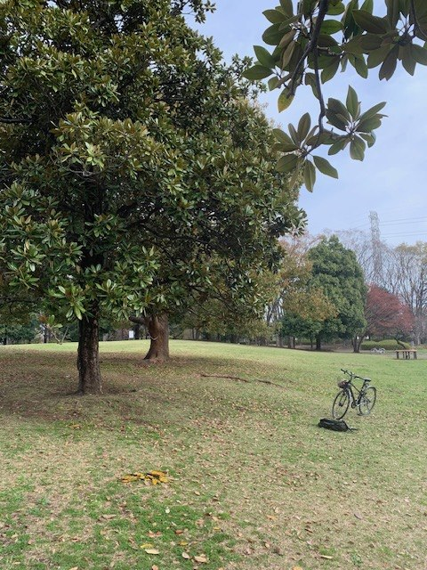
それから、この木には何度も会いに来ています。
- 2021年3月25日はじめて訪れる。ここから落ち葉拾いが始まる
- 2023年5月13日葉の入れ替わりの季節。拾った葉を色の順に並べる
- 2024年2月11日真冬の自由広場へ
- 2024年7月14日幹の根もとに、拾った葉を並べてみる
- 2025年3月28日春。黄色くなった古い葉が混じる
- 2025年8月14日真夏の自由広場へ
- 2026年5月4日新緑の季節、木の下に自転車を停めて
- 2026年7月3日低い枝の花に手が届く。カゴは落ち葉でいっぱいに
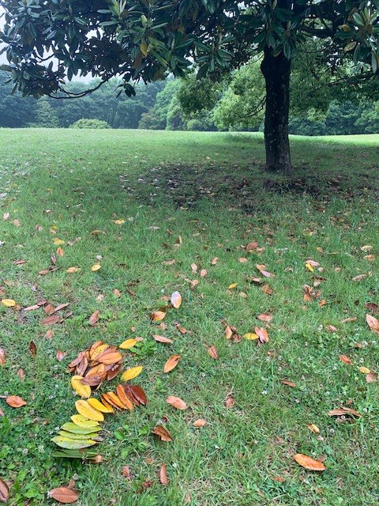
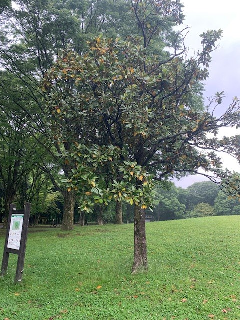
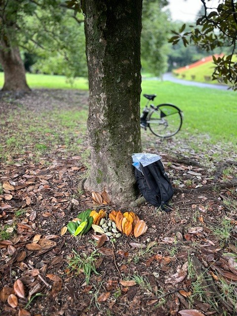
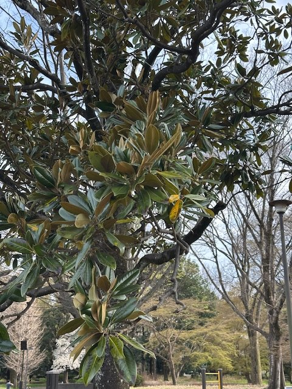
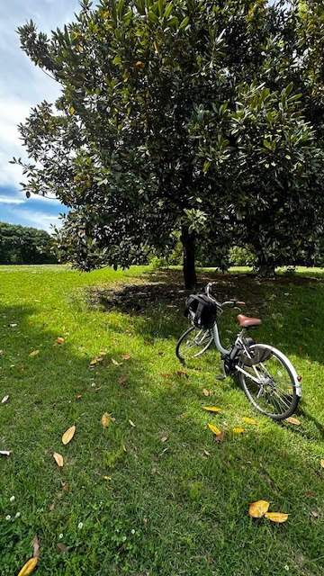
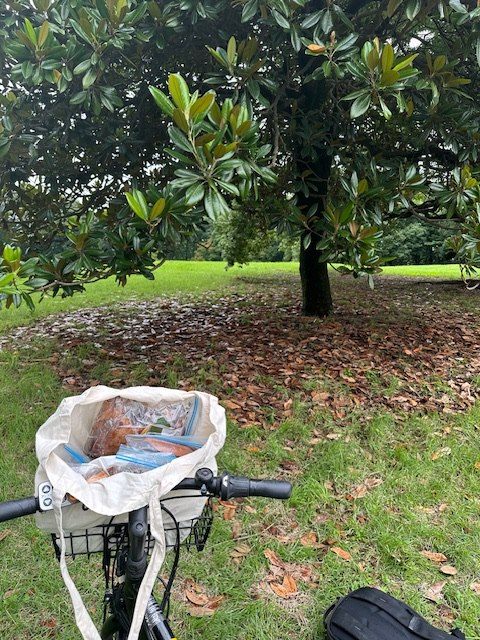
常緑樹といっても、葉が落ちないわけではありません。タイサンボクの重い葉は、一年じゅう、枝の内側から少しずつ落ちていきます。そのうえ春から初夏にかけて、古い葉を新しい葉とまとめて入れ替えます。写真を見返すと、3月にも、5月にも、7月にも、木の下には落ち葉がありました。拾うなら、とくに5〜6月が狙いめです。
拾った葉を色の順に並べると、緑から黄、橙、茶色まで、たった1本の木の足もとに、これだけの色がそろっています。ネイチャーアートでおなじみの、インスタグラデーションです。
東京のタイサンボクマップ
神代植物公園のほかにも、上京するたびに、どこかでタイサンボクを探しています。2025年3月28日は深大寺小学校、神代植物公園、井の頭恩賜公園。3月30日は国立オリンピック記念青少年総合センターと北の丸公園。我ながら、せわしない。
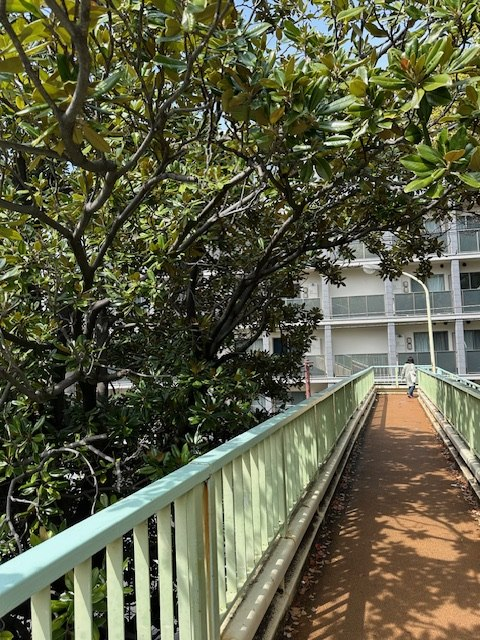
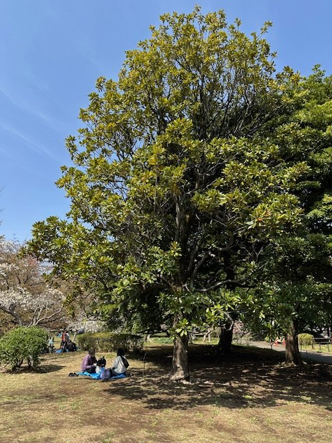
こうして訪ねた場所と、調べてわかった植栽地を、私たちホホホの森探検隊で一枚の地図にまとめました。Googleマイマップの「タイサンボクマップ」です。2026年7月13日の更新で、東京の山の手から武蔵野台地にかけての88か所を、4色で塗り分けています。黒は実際に落ち葉を拾った6か所、赤は木の場所まで特定できる61か所、黄は街路樹や並木の6か所、青はあると聞いたものの、まだ場所を特定できていない15か所です。
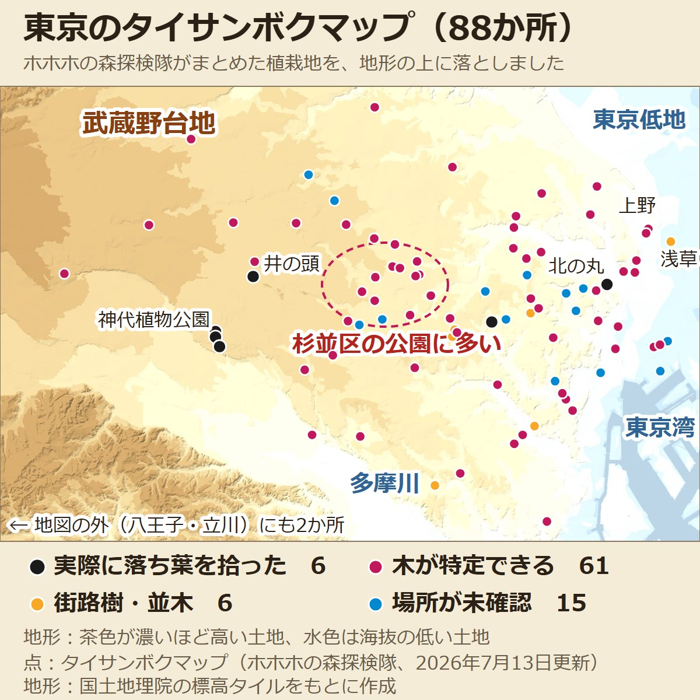
地形の上に落としてみると、気づくことがいくつかあります。
- 台地の上に多い。点の多くは、茶色の武蔵野台地や山の手の台地の上にあります。東の低地や東京湾ぞいは、神田のあたり、中央区の佃や明石町、浅草の街路樹などに限られます。台地の上に大きな公園や大名屋敷の跡が多いことが、そのまま表れているのでしょう。
- 杉並区の公園にずらりと並ぶ。善福寺川緑地から蚕糸の森公園、和田公園まで、杉並区のあたりだけで20か所近く。小さな児童遊園にまで植えられています。区の公園づくりの好みなのか、私たちの調べ方のくせなのか。これは宿題です。
- 由緒のある木がある。上野のグラント夫人の木、新宿御苑の明治の古い木、東久留米市の保存樹木になっている自由学園の木。林試の森公園と羽根木公園の木は、ホソバタイサンボクです。
- 新しい植え方もある。浅草の左衛門橋通りには、平成29〜30年に植えられたリトルジェムが99本。並木になったタイサンボクです。
見直してみると、直したいところも見つかりました。上野の説明に「グラント将軍が植えた」と書いていましたが、植えたのは夫人のほうです。「日本で最初」というのも、上で書いたとおり、まだ決着していません。サンシャイン公園の木は、別の種のヒメタイサンボクなので、色を分けたほうが親切です。青い15か所の場所の確認と、訪ねた日付の記録も、これからの宿題です。
そしてもう一つ。小石川植物園のように、落ち葉の持ち帰りができない場所もあります。拾う前に、その公園や施設のきまりを確かめてください。
葉っぱの金継ぎへ
拾い集めた落ち葉は、岩手に持ち帰って「葉っぱの金継ぎ」の材料にします。割れたり欠けたりした器を漆でつなぎ、継ぎ目を金で仕上げる金継ぎ。その考え方を落ち葉に持ち込んだクラフトです。材料には、厚みがあって丈夫で、切っても貼ってもへこたれないタイサンボクの葉がいちばん。「タイサンボクの葉の質に勝るものはない」と、私は思っています。
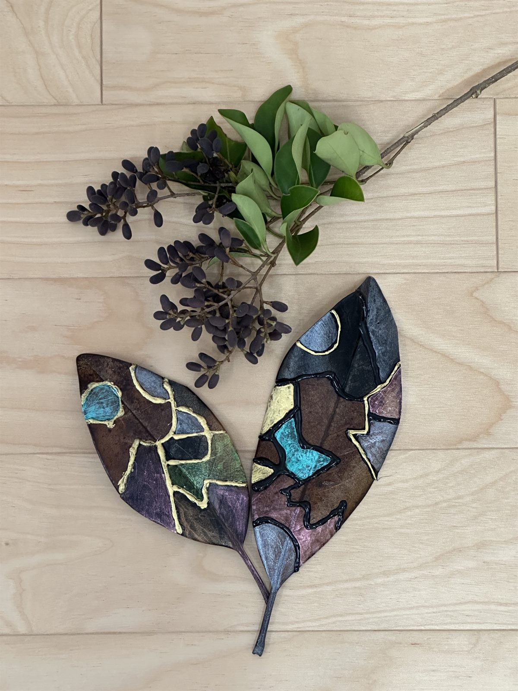

きれいに仕上げるコツは、絵の具を塗らない葉の余白をたくさん残すこと。落ち葉そのものの茶色が、いちばんの「景色」になります。茶の湯では、器の見どころを景色と呼んできました。南部の人たちがクリスマスのリースで葉の茶色い裏を楽しむのと、どこか通じるところがある気がします。作り方は、コラム「葉っぱの金継ぎ」にまとめています。
最後に
原美術館の玄関先で惚れた1本から、アメリカ南部の海岸平野、白亜紀の化石、ホワイトハウスとマスターズ、上野の8月25日と渋沢栄一、東京の88か所、そして岩手の金継ぎまで。落ち葉1枚から、ずいぶん遠くまで歩いてきました。
この落ち葉拾いから学んだことは、次です。
「一枚の落ち葉にも、景色と来歴がある」
参考にした資料
- Magnolia grandiflora（英語版ウィキペディア）｜分布、呼び名、ヨーロッパへの伝来、品種、木材、成分、ジャクソン・マグノリア
- Magnolia（Trees and Shrubs Online）｜モクレン属の節の分け方
- タイサンボク（庭木図鑑 植木ペディア）｜名前の由来、ホソバタイサンボク、日本での広がり
- 樹木シリーズ209 タイサンボク（あきた森づくり活動サポートセンター）｜渡来の年、上野の記念樹
- グラント将軍植樹碑（渋沢栄一ゆかりの地28）（気ままに江戸♪）｜碑文と、除幕式での渋沢栄一の思い出話
- 上野恩賜公園・グラント将軍植樹碑（東京とりっぷ）｜歓迎会と除幕式での渋沢栄一
- Fruitlands（米国国立公園局）｜マグノリア・レーンの植栽
- タイサンボクマップ（ホホホの森探検隊、Googleマイマップ）｜東京の88か所
- 地理院タイル（国土地理院）｜東京の地形の図（標高タイルを加工して作成）。分布図は Wikimedia Commons の分布図（E. L. Little Jr. の樹木分布図にもとづく）に日本列島を重ねて作成
※ 写真の撮影日は、写真に記録された撮影日時によります。調べものと作図の一部に、生成AI（Claude）を使っています。